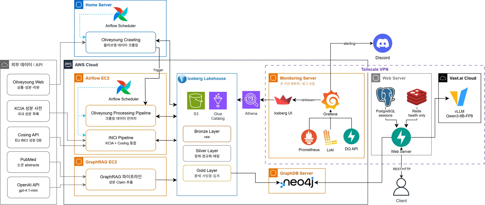
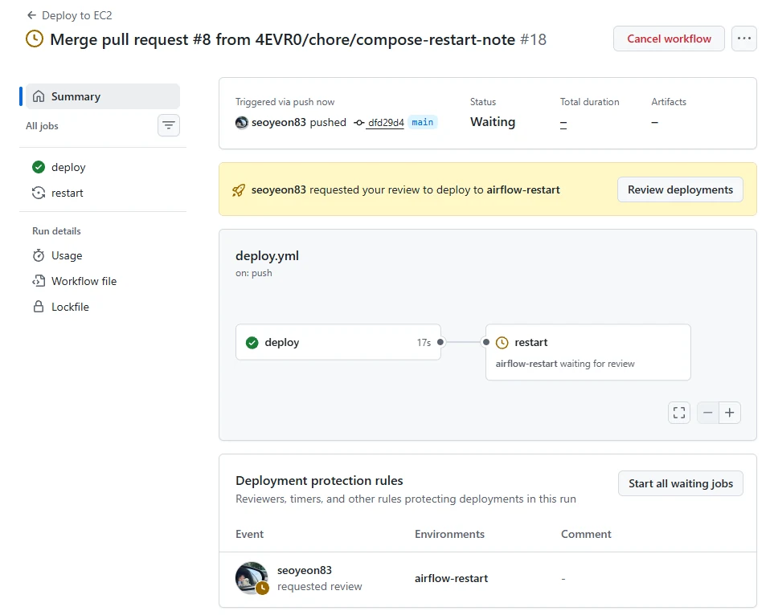
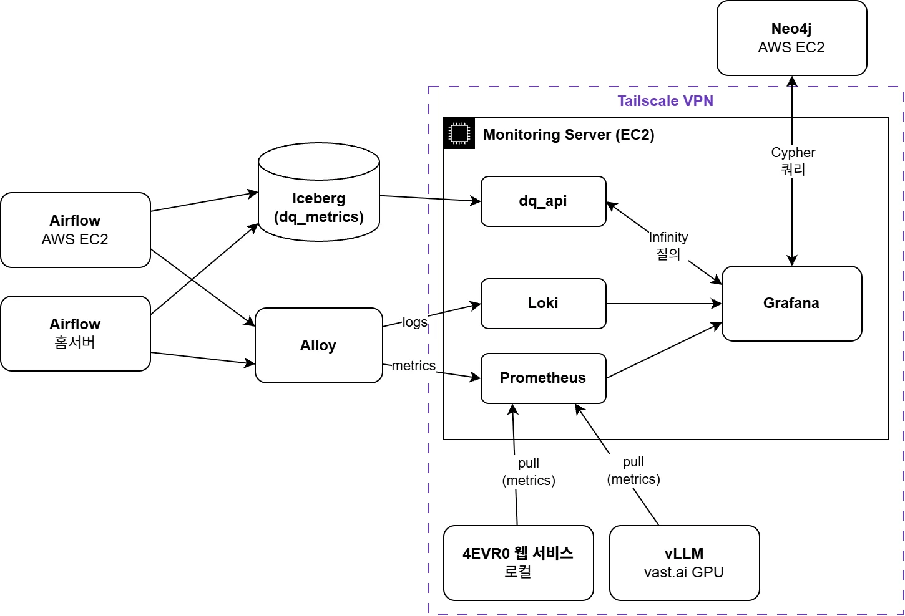
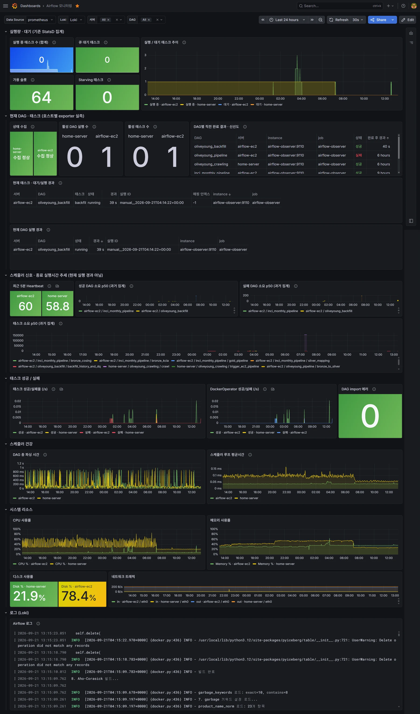
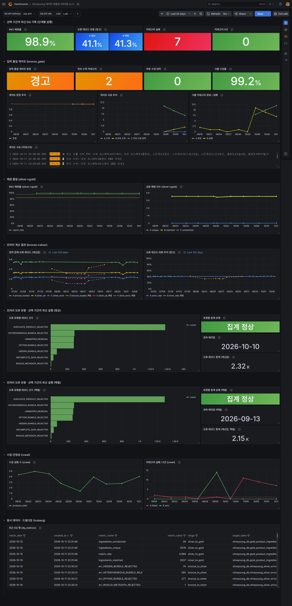
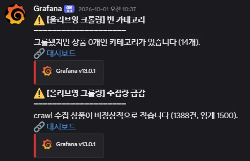
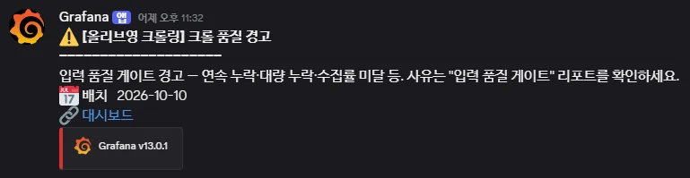
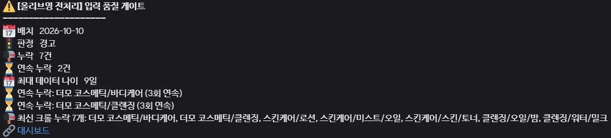

KG-RAG 기반 화장품 추천 시스템
피부 고민을 자연어로 입력하면 근거 있는 성분·제품을 추천하는 GraphRAG + LLM 기반 화장품 추천 서비스. 데이터 파이프라인부터 LLM 서빙, 최적화, 품질 검증까지 End-to-End LLMOps로 구현했습니다.
- 소속
- 빅데이터 연합 동아리 BOAZ 25기 데이터 엔지니어링
- 기간
- 2026.01 – 2026.07 정규 활동, 2026.08 – 현재 운영 및 개선
- 팀
- Team 4EVR0 (4인)
- 역할
- 데이터 파이프라인 설계 · AWS 인프라 구성 및 운영 · 통합 모니터링 및 알림 구축
- 담당 범위
-
- Iceberg 기반 메달리온 아키텍처(Bronze / Silver / Gold) 설계
- 데이터 전처리 파이프라인 및 backfill 설계
- 워크플로우 오케스트레이션(DAG) 설계
- AWS 기반 인프라 구성 및 운영
- 5개 이기종 실행 환경 통합 모니터링 체계 구축
- 성과
-
- 제24회 BOAZ 빅데이터 컨퍼런스 발표 및 데모 부스 진행 (2026.07.25)
- 종료 후 서버 중단 기간의 누락 배치 7개를 백필로 복구 (2026.09)
- 운영 중 발견한 크롤 DQ 오탐의 원인 분석과 입력 품질 게이트 도입, 전처리 재실행 멱등화 (2026.09 – 10)

01
데이터 전처리 파이프라인 설계
크롤링한 올리브영 데이터를 정제해 Silver 레이어에 분기 저장하고, Graph RAG 시스템에 공급하는 ETL 파이프라인입니다.
파이프라인 흐름
S3에 레이어별로 적재합니다.
Current: 최신 스냅샷 (overwrite)
History: 시계열 누적 (append)
Error: 거부 레코드·잔여 성분 경고를 사유별로 태깅 보존
Error로 분기되는 경우: 크롤링 데이터 누락, 중복 데이터, 성분 분석이 불가한 데이터, 성분 매칭이 안 된 경우
문제
- 성분 표기가 상품마다 제각각이고, 현행 성분명과 구명칭이 섞여 있다
- 상품 하나에 성분을 귀속시킬 수 없는 경우가 있다 (옵션 선택형, 이종 결합 세트)
처리
- Aho-Corasick으로 성분표에서 사전 어휘를 다중 패턴 탐색
- 성분 현행명과 구명칭을 모두 사전에 두어 표기가 바뀐 성분도 매칭
- 귀속 불가 상품은 분석 대상에서 제외하되, 버리지 않고 사유를 남김
- 운영 개선: 과거 누락 배치 재처리를 위한 별도 Backfill 경로 추가
- 운영 개선: DLQ 자동 재투입 대신 사전 보완. 오류 1,826건 중 82%가 의도된 제외(중복 56%, 번들 26%)이고 3일마다 재수집되므로, 사전만 고치면 다음 배치에서 자동 복구
성분 매칭 정합성 상시 95%+ 유지 (평상 ≈ 99.1%, 95% 미만 시 알람). 실패는 DLQ(Error)로 격리해 파이프라인 무중단
성분 매칭을 Aho-Corasick(사전 2.6만 키)으로 O(n·m) → O(n+m) 개선 → 사전 완전탐색 대비 약 200배대 속도
02
CI/CD: 키리스 인증과 결과를 확인하는 배포
구축 배경
DAG 내 스테이지를 독립 컨테이너(DockerOperator)로 끊어 설계 → 코드 변경이 이미지로 반영되어야 실제 실행에 적용되는 구조
- 이미지: 손으로 하면 4개 레포에서 이미지 빌드 후 ECR push를 매번 반복해야 한다
- 호스트: DAG 정의와 compose 설정은 Git에 있는데, 서버에 직접 붙어 작업하는 일이 잦아 git pull을 빼먹고 실행 코드와 레포지토리가 어긋나는 일이 반복됐다
CI/CD 파이프라인 구성
- 이미지는 ECR에서, 호스트의 DAG 및 설정은 Git에서 각각 최신을 맞춤
- 역할을 용도별로 나눠 최소 권한 유지
| 워크플로우 | 하는 일 | Assume Role |
|---|---|---|
build-and-push.yml | 이미지 빌드 → ECR push | GitHubActionsECRRole |
deploy.yml (Airflow_Infra) | SSM으로 git pull + 결과 회수, compose 변경 시 승인 후 재시작 | GitHubActionsSSMRole |
deploy.yml (Monitoring_Infra) | 바뀐 설정의 서비스만 재시작 + 헬스체크 3종 | GitHubActionsSSMRole |
키리스 도입
- 레포 secrets에 액세스 키를 두면 유출 시 회수가 어렵고 주기적 교체가 부담
- GitHub OIDC로 받은 단기 토큰으로 IAM Role을 assume → 레포에 AWS 키 없이 배포
배포 결과 확인과 위험도별 반영 (2026.10)
- SSM 호출 성공 ≠ 배포 성공: 원격 git pull이 실패해도 초록불이던 배포를, 결과를 회수해 실패로 처리하도록 변경 → 첫 실행에서 숨어 있던 git 소유권 문제가 바로 드러나 수정
- 위험도별 반영: 알림과 수집 설정은 머지 즉시 자동 반영하고, 실행 중 태스크를 끊을 수 있는 scheduler 재시작만 GitHub environment 승인 후 반영
- 승인 경로 검증: compose에 주석만 바꾼 PR로 감지 → 승인 → 재시작 → 헬스체크 OK. 설정 변화가 없어 scheduler가 재생성되지 않으므로, 태스크 중단 위험 없이 흐름 전체를 확인

※ 최초 SSM 배포는 팀원이 구현했고, 결과 확인과 자동 반영, 승인 분리는 직접 설계했습니다.
03
통합 모니터링 구축
사람이 보고 있지 않아도 증상이 드러나야 한다. 대시보드는 증상을 보이게, 알람은 보지 않을 때 알리게.
배경
문제
- 파이프라인이 실패했을 때 증상이 어디에도 드러나지 않았다. 크롤링은 홈서버, 전처리는 EC2, 서빙은 vast.ai GPU와 웹 서버에 흩어져 있어 실패를 알아차리는 방법이 사람이 직접 들어가 보는 것뿐이었다.
- 더 큰 문제는 DAG가 성공해도 결과가 틀릴 수 있다는 것. 오케스트레이션이 녹색이어도 매칭률이 떨어지면 잘못된 데이터가 그대로 그래프에 적재되고, 우리는 그걸 알 수 없다.
무엇을 보이게 만들 것인가
| 질문 | 관측 대상 |
|---|---|
| 파이프라인이 도는가 | Airflow |
| 결과가 맞는가 | 데이터 정합성 |
| 서빙이 정상인가 | vLLM, 웹 서버 |
| 그래프가 채워지는가 | Neo4j |
과정
수집 경로는 넷으로 갈렸지만, 라벨을 통일해 한 화면에서 로그까지 이어지게 했습니다.

- 팀원의 모니터링 작업을 이어서 작업
- 팀원이 Prometheus + Grafana로 웹 서비스와 vLLM을 pull 방식으로 연결해 둔 상태 (x86, Tailscale 기반)
- 서버 아키텍처 마이그레이션
- x86이던 스택 전체를 t4g(ARM) 한 대로 올리면 다른 인스턴스와 스택 일관성을 유지하고 인스턴스 단가도 줄일 수 있어 ARM으로 마이그레이션
- 관측 범위 확장 (Airflow EC2 및 홈서버)
- 홈서버: 다른 tailnet이라 중앙에서 도달 불가 → push만 가능
- Airflow EC2: 도달은 되지만 태스크 로그를 파일로 tail해야 해 로컬 에이전트가 필수 → 띄운 에이전트로 메트릭도 함께 전송
- 갈림의 기준은 상시 가동 여부가 아니라 로그까지 걷어야 하는가 vs 자체 /metrics를 노출하는가
- 로컬 에이전트로 Grafana Alloy 도입: 각 호스트에서 exporter를 스크레이프해 Prometheus로 remote_write, 로그는 파일을 tail해 Loki로 push
- 데이터 정합성 지표 추가 (dq_api)
- 파이프라인 품질 지표는 실시간 스크레이프 대상이 아니라 배치 산출물이라, Iceberg에 적재한 뒤 FastAPI로 서빙해 Grafana가 질의하는 경로를 따로 개발
- Airflow 실행 상태 수집 추가
- StatsD는 끝난 실행의 집계라서 "지금 무엇이 돌고 있는지"를 알 수 없었음
- 각 Airflow 호스트에 REST API를 조회하는 exporter를 docker-compose로 배포. 홈서버는 호스트 로컬에서 수집하고 기존 Alloy push 경로를 재사용
- 남긴 것
- 기존 pull 경로(웹 서비스, vLLM)는 Tailscale로 도달 가능하고 자체 /metrics를 노출하므로 마이그레이션하지 않고 유지
- Neo4j는 DB 담당 팀원이 Grafana 플러그인으로 직접 질의하도록 구성해 둔 것을 그대로 유지
라벨을 job · host · dag_id · task_id로 통일해, 수집 경로가 달라도 패널에서 바로 해당 구간 Loki 로그로 이동할 수 있게 했습니다.
Airflow 대시보드
"파이프라인이 도는가"와 "결과가 맞는가"는 서로 다른 실패 모드 → Airflow 대시보드와 데이터 정합성 대시보드를 분리했습니다.
문제
- StatsD 지표는 끝난 실행의 통계라서 현재 어떤 DAG·태스크가 얼마나 돌고 있는지, 직전 실행이 어떻게 끝났는지 알 수 없었음
- 메트릭이 비었을 때 "실행이 0건"인지 "수집이 끊긴 것"인지 구분할 수 없었음
- DAG 선택 변수가 완료 이력 기반이라, 한 번도 안 돈 수동 백필 DAG는 목록에 없음
처리
REST exporter로 6개 패널 추가. 기존 StatsD 패널은 지우지 않고 "전체 부하·추세" 역할로 남겼습니다.
지표 선정 근거
- 상태 수집 성공 여부: 관측 실패와 실행 0건을 구분하는 기준
- 활성 DAG/태스크 수 + 현재 대기/실행 경과: 어떤 작업이 얼마나 기다리고 돌았는지
- DAG별 직전 완료 결과 + 신선도: 성공 여부만으로는 멈춘 파이프라인이 드러나지 않음. 완료 후 경과 시간으로 멈춤을 드러냄
- 등록된 DAG 지표를 변수에 추가: 완료 이력이 없는 백필 DAG도 선택 가능
변수 캐스케이드
$host → $dag_id 종속. 홈서버와 EC2가 서로 다른 DAG를 실행하므로 host를 먼저 골라야 무관한 DAG가 섞이지 않습니다.

데이터 정합성 대시보드
결과가 맞는지, 얼마나 맞는지, 무엇이 틀렸는지에 답하는 대시보드 (7월 11패널 → 10월 27패널). 점수판(요약) → 게이트(입력 판정) → 추이(경향) → 원시 행(드릴다운) 순으로 좁혀 들어가는 구조입니다.
문제
- 오류율(41%)이 상품 실패율로 읽힐 수 있었음. 실제로는 정상 적재된 상품의 잔여 경고까지 섞인 값
- 과거 날짜를 최근에 처리하는 백필이 "최신 정상 실행"으로 오독될 위험
처리
- 정상/백필 stage 분리: 추이는 한 차트에서 비교하고, 실행 단위 상세는 행을 분리. 서로 다른 실행이 하나의 집계처럼 보이지 않게 함
- 최신 실행의 오류 유형별 건수: 동적 처리라 새 유형이 생겨도 대시보드 수정 불필요. 최신 실행은 created_at 기준 (백필 대응)
- 집계 완전성 판정: 유형별 합계 ≠ 전체 오류 수면 '집계 불완전'으로 표시해 부분 기록을 정상 막대로 보여주지 않음. 운영 백필 7건 모두 일치 확인
- 오류율 → "오류 레코드 비중(참고)": 패널 이름과 설명을 지표의 실제 의미에 맞게 변경
- 추이 x축을 batch_date로, 백필은 점선: 오늘 돌린 8월 백필이 8월 위치에 찍힘
- 입력 품질 게이트 행: 판정과 사유 수치 옆에 게이트 로그(Loki)를 붙여 '몇 개'와 '어느 카테고리'를 한 화면에
지표 선정 근거
- 정합성 점수판 4종(매핑률 · 오류율 · 카테고리 실패 · 빈 카테고리): 알람이 울렸을 때 "왜"를 보는 첫 화면
- 게이트 판정 + 연속 누락 + 부분 수집 입력: 전처리를 그대로 진행할지, 경고할지, 멈출지를 한눈에. 연속 누락 수 = 데이터 나이 9일 SLO 위반 수
- 크롤 수집률(수집 수 / 기대 URL 수): 카테고리는 '완료'인데 상품이 일부 빠지는 상품 단위 누락을 숫자로 드러냄
- 매핑률 + unmatched 절대 건수: 보강이 필요한 규모를 절대량으로 파악
- Bronze → Silver 행 흐름(loaded / ok / error): 절대 건수를 나란히 두어 원인 계열 확인

시행착오: 로그 파싱에서 API 서빙으로
무엇이 언제 잘못됐는지는 알아도, 어떻게 잘못됐는지는 보이지 않았습니다.
1세대: Loki 기반 로그 파싱
파이프라인이 완료 시 로그에 DQ 마커와 JSON을 찍고, Grafana가 LogQL regexp + unwrap으로 숫자를 파싱해 패널을 그렸습니다.
last_over_time({job="airflow", task_id="crawl"} |= `"DQ"`
| regexp `...` | label_format filename=""
| unwrap products_total [29d])- 로그 파싱이라 취약하다.
last_over_time은 로그 스트림의 라벨 조합마다 별도 시계열을 만드는데, 이 쿼리는 filename만 뭉갠다. 크롤링을 실행한 호스트가 달라지면 host 라벨이 갈리며 같은 지표가 두 줄로 쪼개진다. - 원시 데이터 드릴다운이 불가능하다. 이상을 발견해도 그 배치의 정확한 값까지 내려갈 수 없다.
2세대: Iceberg 테이블 + API 서빙
품질 지표를 Iceberg 테이블 dq_metrics로 정식 적재 → FastAPI + DuckDB로 서빙 → Grafana Infinity로 질의.
GET /dq/latest?stage=crawl&metric=products_total
{ "metric_value": 4115.0, "batch_date": "2026-09-07", "run_id": "20260904",
"target_table": null, "created_at": "2026-09-08T15:05:11.533758+00:00" }- 지표가 로그 스트림의 라벨이 아니라 데이터의 키(
batch_date·run_id)로 식별 → run당 정확히 한 행 - 원시 행(최근 200개) 드릴다운 테이블 패널 신설 → 요약에서 이상을 발견한 뒤 그 배치의 정확한 값까지 확인 가능
Discord 알림 및 리포트 체계
대시보드를 계속 보고 있을 수는 없으므로, 메트릭 기반 Discord 알림으로 이상 상황을 즉시 통보받고 파이프라인 완료 리포트도 받도록 구성했습니다.
감시 항목 (총 14종, 알림 룰은 머지하면 운영에 자동 반영)
- 데이터: 크롤 신선도, 전처리 지연, 매칭률 급락, 오류율 상승, 크롤 품질 경고, 전처리 보류
- 파이프라인: DAG 실패, 스케줄러 다운, 크롤 장기 실행, 관측 수집 실패
- 인프라: 서버 디스크 85% / 93%, 서버 메모리 90%, Airflow 노드 끊김
임계치 근거
| 알람 | 임계 | 평상시 실측 | 마진을 이렇게 잡은 이유 |
|---|---|---|---|
| 매칭률 급락 | < 0.95 | ≈ 0.991 | 정상 변동으로는 울리지 않고 진짜 급락만 |
| 전처리 오류율 | > 0.7 | ~0.41 | error_rate에는 의도된 제외(옵션 상품·중복)가 원래 섞임 → 정상치의 약 2배 |
| 크롤 품질 경고 | 경고 판정 | 누락, 연속 누락 | 고정 수집량 대신 카테고리 단위 판정 (아래) |
| 전처리 보류 | 보류 판정 | 대체할 run 없음 | 쓸 데이터가 아예 없을 때만 멈춤 (아래) |
| 크롤 신선도 | 120h | 최대 간격 95h | 96h는 정상 간격과 붙어 있어 하루 여유 추가 |
파이프라인 완료 리포트
- 각 단계가 품질 지표를 적재하는 순간 자동 발송
- 배치 날짜와 데이터 품질 지표를 함께 보내 수행 결과를 한눈에 확인
문제 해결 사례
- 디스크 부족 알림: 쓰지 않는 Docker 이미지와 설정 파일을 정리해도 임계치 아래로 내려가지 않아 EBS 볼륨을 30GB에서 40GB로 증설
- 노드 끊김 알림이 저절로 해소되던 버그: 노드가 15분 넘게 꺼져 있으면 알림이 해소 상태로 바뀌던 문제를
absent_over_time으로 고치고 운영 Prometheus에서 확인
04 · 종료 후 운영 개선 (2026.09 – 10)
크롤 DQ 오탐에서 입력 품질 게이트까지
정규 활동이 끝난 뒤에도 파이프라인을 운영하며 발견한 문제를 원인부터 다시 짚고, 측정·판정·알림·복구·재실행 경로를 고쳤습니다.
크롤 DQ 오탐 알림: 원인 좁히기
이미 끝난 크롤의 알림이 4시간마다 반복 → 측정, 기록, 알림 전달, 하류 네 층위로 나눠 원인을 확인했습니다.
증상 (2026.09)

원인 (크롤 로그, S3 manifest 24개 재계산, DQ 30일 행으로 확인)
| 층위 | 원인 | 근거 |
|---|---|---|
| 측정 | 재개된 실행이 DQ를 이번 시도분만 집계. Timeout 등 일반 예외는 실패 수에서 빠짐 | products_total = 프로세스 내부 카운트, manifest는 run 누적 |
| 수집 기록 | URL 20개 묶음마다 카테고리를 '완료'로 기록 → 재개 시 반쯤 모은 카테고리를 건너뜀 | flush_subcategory()가 호출마다 completed에 추가 |
| 알림 전달 | 기간 제한 없이 최신 1행을 조회 + 4시간 재알림. 고정 임계 1,500은 현재 정상치(3,061 ~ 5,126)와 맞지 않음 | rules.yaml, notification-policy.yaml |
| 하류 | 카테고리마다 최신 run을 그대로 선택 → 반쪽 데이터가 경고 없이 서비스 데이터가 됨 | 9/25 에센스 258건 (평소 ~859건) |
진짜 위험은 '적게 모인 것'이 아니라 '반쯤 모인 카테고리'가 하류로 들어가는 것.
통째로 빠진 카테고리는 이전 run 데이터로 채워지지만, 반쯤 모인 카테고리는 최신 run으로 선택되어 빠진 상품이 사라진 상품으로 처리된다.
※ 수집(크롤러)은 팀원 담당. 사이트를 다루는 수집 로직은 그대로 두고, 결과를 기록하고 집계하는 부분만 수정했습니다.
고치는 순서 정하기: 측정 → 게이트 → 알림
측정이 틀린 채로 판정을 만들면 정상 배치는 막고 손실 배치는 통과시킵니다.
- 측정 바로잡기 · 크롤러 기록, 집계
- DQ를 manifest 기준(run 누적)으로 계산
- 카테고리 '완료'는 끝까지 수집했을 때만 기록
- 모든 예외를 실패로 기록하고 사유 보존
- 같은 날짜 중복 실행 차단 (
max_active_runs=1, manifest 소유 dagRun 확인)
- 입력 품질 게이트 · 전처리 맨 앞
- bronze 로드 직전, 실제로 읽을 파일 목록으로 판정 (별도 태스크면 판정과 로드 사이에 입력이 바뀜)
- 자동 트리거와 수동 실행 모두 같은 게이트 통과
- 판정 기준은 게이트 코드 한 곳에만
- 알림 재설계 · Grafana
- 배치 품질 알림은 기록 1건당 1번 (created_at 라벨, 해소 알림 끔)
- 오탐 룰 2종 삭제 → 게이트 판정 알림으로 교체
- 크롤 장기 실행(60h), 관측 수집 실패 알림 추가
| 이전 | 이후 | |
|---|---|---|
| 크롤 품질 판정 | 수집량 < 1,500, 빈 카테고리 > 0 (그것도 틀린 숫자로) | 부분 수집, 연속 누락, 한 번에 다수 누락 기준 |
| 알림 반복 | 끝난 배치 알림이 4시간마다 반복, 어느 배치인지 없음 | 배치당 1번, 배치 날짜 포함 |
| 크롤 멈춤 | 끝나야 보임 (최악이면 4일 뒤 신선도 알림) | 60시간 넘으면 알림 |
| 9/22 같은 손실이 다시 일어난다면 | 실패 0으로 기록, 알림 없음 | 실패 7로 기록, 경고 1번 |
배포 후 확인 (10/7): 같은 날짜 차단 동작, 리포트에 시도 횟수 표시, '스킨케어/크림 3회 연속 누락' 경고 1번만 발송, 전처리 지연 오탐 없음

입력 선택 규칙: 카테고리 단위로 믿을 데이터 고르기
크롤러는 배포 일정상 고칠 수 없었다 → 데이터를 받아 쓰는 쪽에서 카테고리 단위로 고릅니다.
문제
게이트의 '보류'는 입력 전체를 멈춥니다. 반쪽 카테고리 1개 때문에 나머지 18개 갱신도 멈추고, 그 카테고리가 다음 크롤에서 통째로 빠지면 같은 반쪽 데이터가 계속 골라져 보류가 끝나지 않습니다. 백필은 입력을 고르는 방식이 달라 백필한 날짜만 카테고리가 빠졌습니다.
검토한 선택지
| 선택지 | 판단 |
|---|---|
| 부분 수집 폴더를 S3에서 수동 삭제 후 재실행 | 기각: 되돌릴 수 없고, 기록이 남지 않음 |
| 정상 전처리만 자동 대체, 백필은 제외 | 기각: 백필 날짜의 의미가 계속 달라짐 |
정상과 백필이 같은 규칙 select_inputs(as_of) 공유 | 채택 |
규칙
카테고리마다 as_of 이전 run 최대 6개를 최신부터 검사합니다. manifest가 없거나, 완료 표시가 없거나(부분 수집), 상품 수가 이전 run 중앙값의 50% 미만이면 버립니다.
| 상태 | 뜻 | 정상 전처리 | 백필 |
|---|---|---|---|
| fresh | 최신 run 데이터 사용 | 통과 | 사용 |
| stale | 최신 run에 통째로 없음 → 이전 run | 3회 연속이면 경고 | 이전 run으로 채움 |
| substituted | 최신 run을 버리고 이전 run | 경고 | 대체, 리포트 표시 |
| unresolved | 6개 모두 탈락 | 보류 | 그 카테고리 제외 |
검증 (머지 전, 실데이터 과거 재생)
첫 운영 적용 (10/11, batch 10/10): 정상 완료. silver 3,332행 전부 source_run_id 기록 → 한 배치에 크롤 run 4개가 섞인 것이 행 단위로 처음 보이게 됨. 대체 경로는 아직 실운영에서 발동되지 않음.

운영 데이터 복구를 위한 Backfill 설계
과거 Bronze 데이터를 정상 파이프라인과 분리해 안전하게 재처리하는 수동 복구 경로입니다.
문제
프로젝트 종료 후 전처리 서버가 중단된 기간 동안 크롤링 데이터는 S3에 계속 적재됐지만 후속 전처리는 수행되지 않아 데이터 공백이 생겼습니다. 정상 최신 데이터를 훼손하지 않고, 과거 누락 배치만 선택적으로 복구할 경로가 필요했습니다.
설계 의사결정
- 정상 파이프라인과 분리: silver_history와 백필 전용 DQ만 기록하고, silver_current와 gold / CDC / Neo4j는 제외
- source_run_id 기반 재처리: 날짜 추론 대신 실제 크롤 실행 단위로 입력을 식별해 특정 과거 배치만 선택적으로 복구
- manifest 게이트를 완료 여부에서 무결성으로: 이 크롤은 최근 10회 모두 interrupted. 완료 여부로 막으면 모든 백필이 예외 승인을 요구해 승인이 형식이 됨 → S3 파일과 manifest의 대응, run별 행 수 일치를 검사
- 정상 / backfill DQ 분리:
bronze_to_silver_backfillstage로 기록해 정상 운영 지표와 backfill 지표가 섞이지 않도록 설계
안전장치
- dry-run과 실제 실행(apply) 분리
- 백필 키 범위만 조건부 교체 (같은 날짜의 정상 데이터와 충돌하면 거부)
- 쓰기 후 재조회 검증을 통과해야만 완료 리포트 전송
운영 적용
- 8~9월 배치 7개: 입력 25,830건 → history 17,020행, 7건 모두 유형별 합계 일치
- 같은 키를 두 번 apply해도 2,254행 한 벌만 남음 (중복 없이 교체)
- 이후: 같은 교체 방식을 정상 파이프라인 전체로 확장 → 재실행 멱등화
재실행 멱등화: 백필 패턴을 정상 파이프라인으로
실패한 태스크를 다시 돌려도 결과가 같도록 설계하고, 운영 재실행 2회와 다음 정상 배치로 확인했습니다.
문제
실패한 태스크를 Clear 후 재실행하면 silver_history, dq_metrics, gold 테이블이 append라 같은 배치가 두 벌 쌓입니다. 운영 DQ를 조회해 보니 같은 batch_date로 2회 이상 돈 정상 실행이 전처리 DAG의 두 단계(bronze_to_silver, silver_to_gold)에서 각각 4개 날짜씩 있었습니다.
설계
| 설계 | 이유 |
|---|---|
| 쓰기 순서 history → error → current(마지막) → 재조회 검증 → DQ | 하류 CDC가 history 스냅샷을 비교해 새 상품을 찾으므로, history부터 확정하고 서비스용 current는 마지막에 씀 |
| 실행 종류별 교체 범위: 정상은 같은 stage·batch_date의 다른 실행 행 교체, 백필은 고정 키 교체, 크롤은 append 유지 | 실행마다 "같은 결과"의 기준이 다름. 백필 행과, 한 실행이 나눠 쓴 요약·유형별 기록은 보존 |
| gold 단계도 같은 batch_date로 교체, DQ는 gold 쓰기 뒤로 | 쓰기가 실패했는데 품질 기록만 남아 정상처럼 보이는 일 방지 |
| history와 DQ의 실행 ID를 하나로 통일 | 몇 초 차이 나는 다른 값이라 같은 실행의 행을 정확히 찾아 교체할 수 없었음 |
| BATCH_DATE가 비면 즉시 실패 | 07-15 정제 뒤의 gold 단계가 07-16, 07-17로 기록된 날짜 오염 확인 → 교체 키가 엉뚱한 행을 지울 수 있음 |
| 재실행이면 Discord 리포트 제목에 (재실행) 표시 | 같은 배치의 리포트가 두 번 와도 사람이 구분할 수 있게 |
검증 (배포 후, 운영 데이터)
- 배포 직후 버그: 첫 정상 실행 전에 기준값을 조회하다 발견. 행에 찍힌 값(작업 이름)과 교체 키(실행 ID)가 달라 교체와 검증이 동작하지 않는 상태 → 실행 ID로 통일
- 계약 테스트: mock으로 가린 단위 테스트는 통과했음 → 실제 행 값으로 교체와 검증을 확인하는 테스트를 추가하고, 수정 전 코드에서 실패하는지 확인
- 독립 리뷰: 다른 AI에 검토를 맡겨 지적 반영 (0건 쓰기 전 중단, 정상 실행 중 백필 apply 거부 등)
- 10-19 배치 (새 코드의 첫 자연 실행): (재실행) 표시 없음, 단계별 DQ 1 run, history 3,357행과 gold(frequency 900행, change_log 4행) 한 벌, 10-16 행 보존
운영 재실행 (10/17, 10-16 배치 정제 단계만 2회)
| 항목 | 재실행 전 | 1차 | 2차 |
|---|---|---|---|
| 10-16 history 행 | 3,348 | 3,348 | 3,348 |
| history 전체 행 | – | 282,693 | 282,693 |
| DQ 실행 수 | 1 | 1 | 1 |
| history 스냅샷 | 101 | 103 | 105 |
교훈: mock으로 가린 단위 테스트는 데이터 계약을 검증하지 못한다. 배포 직후 운영 기준값부터 재고, 실제 행에 찍히는 값으로 확인한다.